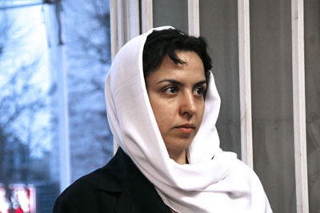

|
|

نفیسه آزاد
آخرین وضعیت نفیسه آزاد در گفتگو با همسر وی
يكشنبه13 بهمن 1387

تغییر برای برابری – در حالی که اعلام شده بود نفیسه آزاد را امروز برای رسیدگی به اعتراض اش به قرار بازداشت
موقت، از بازداشتگاه وزرا به دادسرای انقلاب می برند در پایگاه یکم پلیس امنیت به همسر او وحید ملکی گفته شد که تحقیقات از نفیسه ادامه دارد و امروز هم او در بازداشت می ماند. گفتگوی ما را با وحید ملکی همسر نفیسه می خوانید:
تغییر برای برابری: آقای ملکی شما چطور در جریان بازداشت نفیسه قرار گرفتید؟
 ظهر روز جمعه با تماس یکی از دوستان نفیسه خبردار شدم که نفیسه را حین جمع آوری امضا در توچال بازداشت کرده اند. ظاهرا پلیس قصد دستگیری یکی از دوستان وی به نام خانم بیگرد ابراهیمی را داشته که نفیسه و یکی دبگر از همراهان آنها در حالی که برای کمک به این خانم از پلیس می خواهند او را آزاد کنند بازداشت شده و اول به پایگاه یکم پلیس امنیت دربند و سپس با حکم بازداشت موقت به بازداشتگاه وزرا منتقل می شوند. من از شنبه صبح برای پیگیری وضعیت همسرم به تهران آمدم.
ظهر روز جمعه با تماس یکی از دوستان نفیسه خبردار شدم که نفیسه را حین جمع آوری امضا در توچال بازداشت کرده اند. ظاهرا پلیس قصد دستگیری یکی از دوستان وی به نام خانم بیگرد ابراهیمی را داشته که نفیسه و یکی دبگر از همراهان آنها در حالی که برای کمک به این خانم از پلیس می خواهند او را آزاد کنند بازداشت شده و اول به پایگاه یکم پلیس امنیت دربند و سپس با حکم بازداشت موقت به بازداشتگاه وزرا منتقل می شوند. من از شنبه صبح برای پیگیری وضعیت همسرم به تهران آمدم.
تغییر برای برابری: آیا بعد از بازداشت نفیسه موفق به دیدار او شدید؟
 شنبه صبح قرار بود که هرسه نفر را به دادگاه انقلاب منتقل کنند که البته تا ظهر طول کشید و زمانی که به همراه ماموران از دادگاه انقلاب به وزرا منتقل می شدند توانستم مدت بسیار کوتاهی با او صحبت کنم. جلوی در دادگاه انقلاب.
شنبه صبح قرار بود که هرسه نفر را به دادگاه انقلاب منتقل کنند که البته تا ظهر طول کشید و زمانی که به همراه ماموران از دادگاه انقلاب به وزرا منتقل می شدند توانستم مدت بسیار کوتاهی با او صحبت کنم. جلوی در دادگاه انقلاب.
تغییر برای برابری: حالش چطوربود؟
 وضعیت روحی خوبی داشت اما سرما خورده بود.
وضعیت روحی خوبی داشت اما سرما خورده بود.
تغییر برای برابری: آیا از روند بازجویی ها و صحبت ها و نحوه برخورد با او اطلاعی دارید؟
 زمانی که از دادگاه انقلاب به وزرا و سپس به پلیس امنیت دربند منتقل می شدند توانستم مدت کوتاهی با او صحبت کنم . این طور که متوجه شدم در بازداشتگاه وزرا ازاو بازجویی یه عمل آمده است. نفیسه گفت درمورد نحوه ی بازداشت و جمع آوری امضا از او سوال کرده اند اما درموضوعات دیگری هم پرسش کرده اند که ربطی به دلیل بازداشت او ندارد. نفیسه از این موضوع اظهار نارضایتی می کرد.
زمانی که از دادگاه انقلاب به وزرا و سپس به پلیس امنیت دربند منتقل می شدند توانستم مدت کوتاهی با او صحبت کنم . این طور که متوجه شدم در بازداشتگاه وزرا ازاو بازجویی یه عمل آمده است. نفیسه گفت درمورد نحوه ی بازداشت و جمع آوری امضا از او سوال کرده اند اما درموضوعات دیگری هم پرسش کرده اند که ربطی به دلیل بازداشت او ندارد. نفیسه از این موضوع اظهار نارضایتی می کرد.
وقتی نفیسه را از دادگاه بیرون آوردند گفت بازپرس پرونده به اتهام اقدام علیه امنیت ملی از طریق تبلیغ علیه نظام قراربازداشت موقت صادر کرده است. اما برای آن دو نفر دیگر قرار کفالت صادرشده است و می توانند آزاد شوند. نفیسه هم به قراربازداشت و هم به اتهامی که بر او وارد کرده بودند اعتراض کرده بود و به همین دلیل گفته بودند یکشنبه صبح مجددا او را به دادسرا می آورند. اعتراض نفیسه به این خاطر بود که معتقد بود جمع آوری امضا جرم نیست و او حتی هنگام جمع آوری امضا بازداشت نشده است و فقط خانم بیگرد را همراهی کرده است اما بازپرس گفته بود تحقیقات از نفیسه تمام نشده و ادامه بازداشت او مربوط به موضوع دیگری است.
سوالم این است که چطورمی شود یک نفر را به دلیلی بازداشت کرد اما به دلیل دیگری مورد بازجویی و بازپرسی قرار داد؟
تغییر برای برابری: برای پیگیری وضعیت همسرتان چه اقداماتی انجام داده اید؟
 امروز صبح که به پلیس امنیت پایگاه یکم دربند مراجعه کردم با برخورد دوگانه ای مواجه شدم یک بار به من اعلام شد که درحال تکمیل تحقیقات و بازجویی هستند و وقتی بیشتر پرس وجو کردم گفتند قاضی پرونده حضور ندارد و باید تا فردا صبر کنید. به هر شکل گفتند نفیسه امروز در وزرا خواهد بود. من و چند تن از دوستان نفیسه تا ظهر هم ایستادیم که شاید جوابی داده شود اما اتفاقی نیفتاد. مجددا تاکید کردند در حال ادامه تحقیقات هستند و دادگاهی تشکیل نخواهد شد. حتا با درخواست من برای تحویل لوازم شخصی همسرم به بازداشتگاه مخالفت شد و تنها توانستم مقداری غذا و دارو در اختیار وی بگذارم.
امروز صبح که به پلیس امنیت پایگاه یکم دربند مراجعه کردم با برخورد دوگانه ای مواجه شدم یک بار به من اعلام شد که درحال تکمیل تحقیقات و بازجویی هستند و وقتی بیشتر پرس وجو کردم گفتند قاضی پرونده حضور ندارد و باید تا فردا صبر کنید. به هر شکل گفتند نفیسه امروز در وزرا خواهد بود. من و چند تن از دوستان نفیسه تا ظهر هم ایستادیم که شاید جوابی داده شود اما اتفاقی نیفتاد. مجددا تاکید کردند در حال ادامه تحقیقات هستند و دادگاهی تشکیل نخواهد شد. حتا با درخواست من برای تحویل لوازم شخصی همسرم به بازداشتگاه مخالفت شد و تنها توانستم مقداری غذا و دارو در اختیار وی بگذارم.
فردا صبح مجددا به پلیس امنیت مراجعه خواهم کرد شاید جواب مشخصی داده شود.
تغییر برای برابری: نظر شما درباره فعالیت نفیسه در کمپین یک میلیون امضا چیست؟
نفیسه به فعالیت در کمپین واقعا باور دارد و زندگی خود را بر همین روال تنظیم کرده است. من هم با نفیسه موافق هستم هم با راهی که انتخاب کرده است .
نفیسه را یکی دوبارتلفنی احضار کرده بودند اما او درخواست احضاریه کتبی کرده بود. به نظر من دستگیری او به هنگام جمع اوری امضا بهانه ای شد که از این فرصت استفاده کنند و در مورد سایر مسائل از او بازجویی کنند. این بازداشت تنها به دلیل جمع آوری امضا بوده و جمع آوری امضا به هیچ وجه جرم نیست که در مقابل آن اتهام اقدام علیه امنیت ملی به او تفهیم شود حتا تا جایی که من درجریان هستم در موارد مشابه و بازداشت برخی دیگر از اعضای کمپین به دلیل جمع آوری امضا بعد از برگزاری دادگاه حکم تبرئه آنها صادر شده است. اما در کمال تعجب می بینیم که نحوه ی برخورد با این سه نفر کاملا متناقض بوده است. متاسفم که به خودشان اجازه می دهند چنین برخوردی بکنند.
دیگر رسانه ها:
نفیسه آزاد است حتی در بند / کمپین یک میلیون امضا در کرمان
آزاد و دربند / وبلاگ دختر خورشید
هر روز باید منتظر خبرهای بد باشیم / وبلاگ آلاچیق صبح
سه عضو کمپین یک میلیون امضا بازداشت شدند، /گویا نیوز
دستگیری سه عضو کمپین یک میلیون امضا/رادیو زمانه
سه عضو کمپین یک میلیون امضاء در بازداشت بسر می برند
بازداشت و انتقال اعضای کمپین یک میلیون امضا به بازداشتگاه وزرا! /کمیته گزارشگران حقوق بشر
سه عضو کمپین یک میلیون امضا بازداشت شدند/خبرنامه امیرکبیر
سه عضو کمپین یک میلیون امضا بازداشت شدند/شبکه همبستگی زنان
سه عضو کمپین یک میلیون امضا بازداشت شدند /مدرسه فمنیستی
نفیسه آزاد و دوعضو دیگر کمپین یک میلیون امضا بازداشت شدند/کانون زنان ایرانی
سه عضو کمپین یک میلیون امضا بازداشت شدند/ایران پرس نیوز
سه عضو کمپین یک میلیون امضا بازداشت شدند /پیک ایران
بازداشت چند تن از اعضای کمپین تغیر برای برابری/مجموعه فعالان حقوق بشر
سه عضو کمپین یک میلیون امضا بازداشت شدند/عصر نو
سه عضو کمپین یک میلیون امضا بازداشت شدند/اخبار روز
سه عضو کمپین یک میلیون امضا در بام تهران بازداشت شدند/ادوار نیوز
سه عضو کمپین یک میلیون امضا بازداشت شدند/ره آورد
دستگیری چند تن دیگر از فعالان کمپین در تهران/ وبلاگ پرتو نوری علا